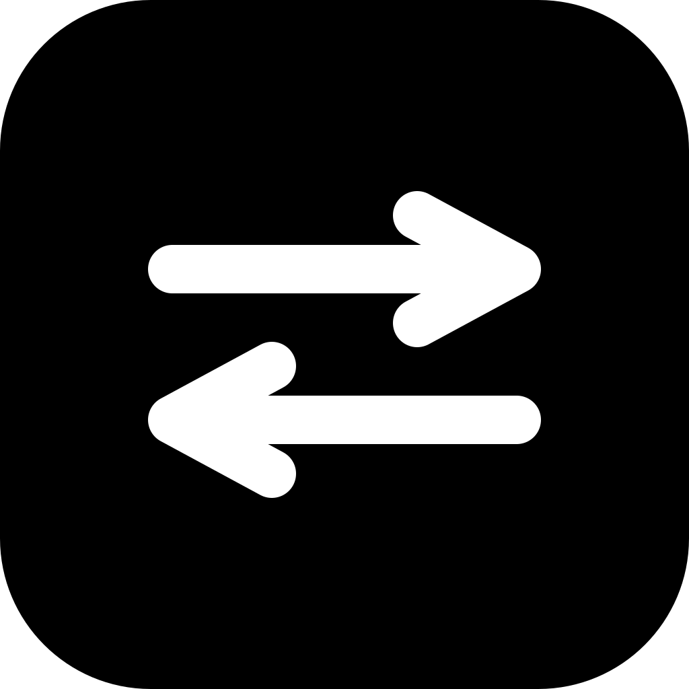

This tab
Screenshot pending…
Captured page text is untrusted. TabHandoff will not pretend AI ran when it did not.
Saved tasks
No saved AI tasks yet on this computer.

Tell AI what to do with this tab.
Screenshot pending…
Captured page text is untrusted. TabHandoff will not pretend AI ran when it did not.
No saved AI tasks yet on this computer.